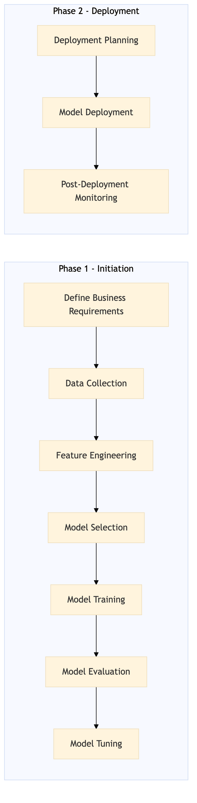

This process document outlines the steps for training and deploying a machine learning model focused on search ranking pricing within the OTA and TMC systems.
| Trigger | A business requirement to improve search ranking pricing accuracy is identified. |
| Outcome | A successfully deployed ML model that enhances search ranking pricing, leading to improved user experience and increased revenue. |
| Systems | Snowflake Kafka AWS SageMaker Tableau Salesforce |

Click to enlarge
| Step | Name & Pain Point | Role | System | Input | Output | KPI | Flags |
|---|---|---|---|---|---|---|---|
| 1.1 | Define Business Requirements Misalignment between technical feasibility and business needs | Data Scientist | Salesforce | Business requirements document | Detailed business requirement specification | Requirement clarity and alignment with business goals | ⚠ Exception |
| 1.2 | Data Collection Inconsistent or missing data | Data Engineer | Snowflake, Kafka | None | Collected and cleaned data set | Data completeness and quality | ⚠ Exception |
| 1.3 | Feature Engineering Irrelevant or redundant features | Data Scientist | AWS SageMaker, Tableau | Cleaned data set | Feature-engineered dataset | Feature relevance and impact on model performance | ⚠ Exception |
| 1.4 | Model Selection Choosing the wrong model type | Data Scientist | AWS SageMaker | Feature-engineered dataset | Selected ML model | Model accuracy and performance metrics | ◆ Decision |
| 1.5 | Model Training Overfitting or underfitting | Data Scientist | AWS SageMaker | Selected ML model and feature-engineered dataset | Trained ML model | Training time and resource consumption | ⚠ Exception |
| 1.6 | Model Evaluation Poor model performance | Data Scientist | AWS SageMaker, Tableau | Trained ML model | Evaluation report | Validation accuracy and performance metrics | ◆ Decision |
| 1.7 | Model Tuning Suboptimal hyperparameters | Data Scientist | AWS SageMaker | Trained ML model and evaluation report | Tuned ML model | Improved model accuracy and performance metrics | ⚠ Exception |
| 1.8 | Deployment Planning Integration challenges with existing systems | DevOps Engineer | Salesforce, AWS SageMaker | Tuned ML model | Deployment plan | Deployment readiness and timeline | ⚠ Exception |
| 1.9 | Model Deployment Technical issues during deployment | DevOps Engineer | AWS SageMaker, Salesforce | Deployment plan and tuned ML model | Deployed ML model | Successful deployment without errors | ⚠ Exception |
| 1.10 | Post-Deployment Monitoring Performance degradation over time | Data Scientist, DevOps Engineer | AWS SageMaker, Tableau | Deployed ML model | Monitoring report | Model performance and user feedback | ◆ Decision |